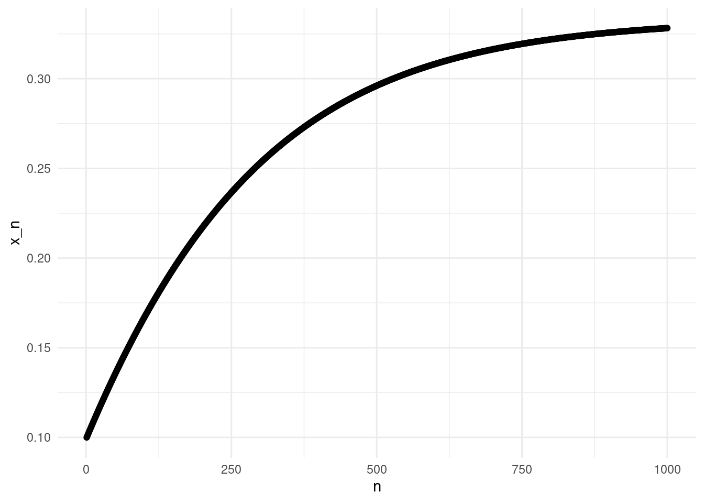
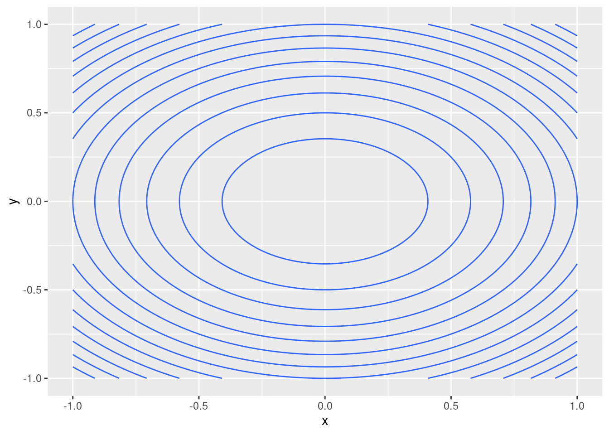
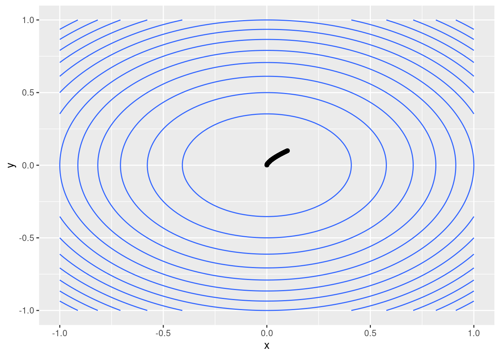

8 Gradient descent
In this chapter we are going to study optimisation methods, and we will focus on gradient descent. Optimisation problems are ubiquitous in many applications, but also in mathematics in statistics. We will look at the example of maximum likelihood estimation, but first we will consider a few toy problems. First we will see that under certain conditions, we can actually solve optimisation problems using the methods from previous chapters. In fact, it was probably the first method you learnt to find the maxima or minima of functions, take the derivative and find zeros, in other words, root finding!
8.1 Optimisation and root finding
Let’s start with a simple example. Consider the following function: \[ f(x) = \frac{a}{2}\left( 1 + x - x^2 - x^3 \right), \] where \(a\) is a positive known constant.
Note: this function is related to an applied optimisation problem: the maximum efficiency of a wind turbine. See https://en.wikipedia.org/wiki/Betz%27s\_law for more information.
If you are asked to find a maximum of this function, what would you do? The most common approach is as follows:
- Compute \(f'(x) = (a/2) (1 - 2x -3x^2)\).
- Solve \(f'(x) = 0\) to obtain \(x = -1\) and \(x = 1/3\).
- Compute $f’’(x) = (a/2) ( -2 - 6x )
- Since \(f''(-1) > 0\), \(x=-1\) is a minimum; since \(f''(1/3)<0\), \(x=1/3\) is a maximum.
Let’s consider this steps. To do Step 1 and Step 2, we require that \(f\) is differentiable (to be precise, that it has one derivative, and the derivative is continuous). To do Step 3 and Step 4, we require that \(f\) is twice differentiable (more precisely, that is has two derivatives, and the second derivative is continuous). Often, Step 3 and Step 4 can be avoided by studying the function of interest. For example, in this case, I know that \(f'\) is a negative parabola, and in consequence the largest zero will satisfy \(f''(x) < 0\). Terefore, the largest zero must be a maximum of \(f\).
Note that I do not need to know the value of \(a\) to find the maximum. I would need the value of \(a\) to find the value of \(f\) at the maximum.
Step 2 is a root finding problem: solve an equation like \(g(x) = 0\). In this case, it was possible to solve the equation by hand, but in general we would need a root finding method. For example:
R
library(nleqslv)
g <- \(x) 1 - 2*x - 3*x^2
gp <- \(x) -2 - 6*x
x0 <- 0.1
nleqslv(x0,g,gp,method="Newton")## $x
## [1] 0.3333333
##
## $fvec
## [1] -8.96076e-11
##
## $termcd
## [1] 1
##
## $message
## [1] "Function criterion near zero"
##
## $scalex
## [1] 1
##
## $nfcnt
## [1] 4
##
## $njcnt
## [1] 4
##
## $iter
## [1] 4Python
import scipy as sp
g = lambda x: 1 - 2*x - 3*x**2
gp = lambda x: -2 - 6*x
x0 = 0.1
sp.optimize.root_scalar(g,x0=x0,fprime=gp,method="Newton")## converged: True
## flag: converged
## function_calls: 10
## iterations: 5
## root: 0.3333333333333333
## method: newtonNote that to apply the Newton method, we need to compute the derivative of \(f'\), that is, we need two derivatives of \(f\)! Even if I can argue differently for Step 3 and Step 4, to apply an efficient root finding method in Step 2 I need the second derivative of \(f\). Esimating the second derivative is costly. For high-dimensional functions, it is costly even for computers, both in terms of time but also due to numerical errors, even if in theory there is an equivalent approach (by computing the gradient and the Hessian matrix).
8.2 Gradient descent
8.2.1 In one dimension
We would like to design an iterative method to find the minimum of a function. Let’s think about the one dimensional case first, suing the same example as before (I am setting \(a=2\) to simplify the notation).
Note: Optimisation problems can be maximisation or minimisation problems. From now own, we will focus on minimisation algorithms. We can always change a problem from a maximisation to a minimisation problem multiplying the objective function by \(-1\). Applying this trick to the previous function, we have: \[ g(x) = -(1 + x - x^2 - x^3), \] and we are interested in finding a minimum without having to compute the second derivative. Let’s assume that we start at the same point as before, \(x_0 = 0.1\). In which direction is the minimum of \(g\)? Well, that question is very hard, but we can ask something simpler: in which direction is \(f\) getting smaller, to the right of \(x_0\) or to the left? In one dimension, there are only two possible directions! We do not want to deal with the second derivative, but we can use the the first derivative, \[ g'(x) = -(1 - 2x - 3x^2). \] Let’s define these functions in R/Python, and look the the value at \(x_0\).
R
g <- \(x) -(1+x-x^2-x^3)
gp <- \(x) -(1 - 2*x - 3*x^2)
x0 <- 0.1
gp(x0)## [1] -0.77Python
g = lambda x: -(1+x-x^2-x^3)
gp = lambda x: -(1 - 2*x - 3*x**2)
x0 = 0.1
gp(x0)## -0.77We can see that \(g'(x_0) < 0\), therefore the function is decreasing. If we take a small step to the right, the value would be smaller. We can use this idea to construct the next iterate: we fix a small step \(h\), and we take \(x_0 + h\). Note that we do \(x_0+h\) instead of \(x_0 - h\) because of the sign of the derivative. In fact, there is no reason to move just a distance \(h\), we can use a step proportional to the value of the derivative: the larger (in absolute value), the steepest the function, so we decrease more by moving in that direction. Thus instead of a step \(h\), we fixed a small value \(\gamma\) and we define \(x_1 = x_0 - \gamma g'(x_0)\). Note that if \(g'\) is negative, we move in the positive direction. We can repeat this process many times to get better approximations. Say we repeat it 100 times, for example.
R
g <- \(x) -(1+x-x^2-x^3)
gp <- \(x) -(1 - 2*x - 3*x^2)
x <- 0.1 #x0
gamma <- 1.e-3
for(i in 1:1000){
x <- x - gamma * gp(x)
}
x## [1] 0.3282104Python
g = lambda x: -(1+x-x^2-x^3)
gp = lambda x: -(1 - 2*x - 3*x**2)
x = 0.1
gamma = 1.e-3
for _ in range(1000):
x = x - gamma*gp(x)
x## 0.3282104064962167The method apparently works, we are getting a value close to the true minimum, \(x=1/3\). It is a slow method, but we are requiring less from the function, and it is simple. We can actually plot the iterates visualise the convergence:
R
library(ggplot2)
gamma <- 1.e-3 #"Step"
n <- 1000 #Iterations
r <- numeric(n) #Results
r[1] <- 0.1 #Initial point
for(i in 2:n){
r[i] <- r[i-1] - gamma * gp(r[i-1])
}
point_plot <- ggplot(data.frame(x = seq(1, n), y = r), aes(x=x, y=y)) +
geom_point() +
theme_minimal() +
ylab("x_n") +
xlab("n")
point_plot
Python
import numpy as np
from plotnine import *
import pandas as pd
n = 1000
r = np.empty(n)
gamma = 1.e-3
r[0] = 0.1
for i in range(1,n):
r[i] = r[i-1] - gamma*gp(r[i-1])
point_plot = ggplot(pd.DataFrame({"x":range(n), "y": r}), aes(x="x", y="y")) + \
geom_point() + \
theme_minimal() + \
ylab("x_n") + \
xlab("n")
point_plot## <string>:2: FutureWarning: Using repr(plot) to draw and show the plot figure is deprecated and will be removed in a future version. Use plot.show().
## <Figure Size: (640 x 480)>
Similarly to the approach we took with fixed point iterations and root finding methods, we could impose other stopping criteria other than the maximum number of iterations.
Exercise: Implement the method including three stopping criteria: maximum number of iterations, distance to the previous iteration, and decrease of \(f\) (that is, how much \(f\) decreased from the previous step).
8.2.2 In several dimensions
The method of gradient descent is easy to generalise to multivariate functions. Let’s consider the function \[ f(x,y) = 3x^2+4y^2. \] In several dimensions, the generalization of the derivative is the gradient, \[ \nabla f(x,y) = \left( \partial_x f(x,y), \partial_y f(x,y) \right) = (6x,8y). \] The gradient is the direction of maximum increase, so similarly to what we did with the derivative in one dimension, the opposite direction of the gradient will give us the dimension of maximum decrease. Therefore, we can start again at \(\mathbf{x}_0\), and define \[ \mathbf{x}_{n+1} = \mathbf{x}_n - \gamma \nabla f(\mathbf{x}_n). \] A few notes: we are considering \(f: \mathbb{R}^d \rightarrow \mathbb{R}\), therefore \(\mathbf{x} \in \mathbb{R}^d\), and the gradient \(\nabla f(\mathbf{x}) \in \mathbb{R}^d\). As in the one dimensional case, \(\gamma \in \mathbb{R}^+\) is a small value.
Let’s have a closer look at our example function \(f\). Rather than using three-dimensional plots, we will use countour plots. The following code is similar to the code we used in the workshops to evaluate functions on a grid. Note that here I am abusing the map function in order to provide more examples of the use of map! The function f, both in R and Python, can be applied directly to the grid, to get a result with the same shape.
R
library(pracma)##
## Attaching package: 'pracma'## The following object is masked from 'package:purrr':
##
## crosslibrary(purrr)
f <- \(x) 3*x[1]^2 + 4*x[2]^2
#10000 points on a grid [-3,3]x[-3,3]
#Alternative to meshgrid
grid <- expand.grid(seq(-1,1,length.out=100),seq(-1,1,length.out=100))
#Alternative to map_dbl (see Ch. 4)
z <- apply(grid,1,f) #1 means "over rows".
#Put everything in dataframe
df <- data.frame(x=grid[1],y=grid[2],z=z)
colnames(df) <- c("x","y","z")
contour_plot <- ggplot(df, aes(x=x, y=y, z=z)) +
geom_contour()
contour_plot
Python
import pandas as pd
f = lambda x: 3*x[0]**2 + 4*x[1]**2
xy = np.meshgrid(np.linspace(-1,1,100),np.linspace(-1,1,100))
grid = [ np.array((x,y)) for x,y in zip(xy[0].ravel(),xy[1].ravel()) ] #List format
z = map(f,grid)
df = pd.DataFrame({"x":xy[0].ravel(),"y":xy[1].ravel(),"z":z})
# Unfortunately geom_contour does not
# work on plotnine!
# There are alternatives using matplotlib.
import matplotlib.pyplot as plt
plt.contour(np.array(df.x).reshape((100,100)),\
np.array(df.y).reshape((100,100)),\
np.array(df.z).reshape((100,100)))## <matplotlib.contour.QuadContourSet object at 0x779e42df1d90>Now we want to apply the gradient descent algorithm to this function \(f\). We proceed as before:
R
#Gradient
Df <- \(x) c(6*x[1],4*x[2])
gamma <- 1.e-3 #"Step"
n <- 1000 #Iterations
r <- matrix(nrow=n,ncol=2) #Results
r[1,] <- c(0.1,0.1) #Initial point
for(i in 2:n){
r[i,] <- r[i-1,] - gamma * Df(r[i-1,])
}
resdf <- data.frame(r)
colnames(resdf) <- c("x","y")
contour_plot <- ggplot(df) +
geom_contour(aes(x=x,y=y,z=z)) +
geom_point(data=resdf,aes(x=x,y=y))
contour_plot
Python
Df = lambda x: np.array([6*x[0],4*x[1]])
n = 1000
r = np.empty( (n,2) )
gamma = 1.e-3
r[0] = 0.1*np.ones(2)
for i in range(1,n):
r[i] = r[i-1] - gamma*gp(r[i-1])
plt.contour(np.array(df.x).reshape((100,100)),\
np.array(df.y).reshape((100,100)),\
np.array(df.z).reshape((100,100)))## <matplotlib.contour.QuadContourSet object at 0x779e42a56750>plt.scatter(r[:,0],r[:,1])## <matplotlib.collections.PathCollection object at 0x779e42d0f790>8.3 Notes
The following notes discuss some other aspects of optimisation and gradient descent.
8.3.1 Optimisation is a very rich field
We have seen the very tip of the iceberg on optimisation. There are specific
methods for specific problems (that is, for different types of functions), from
discrete optimisation (discrete functions), to linear programming (linear
functions with linear constraints), constrained optimisation, stochastic
methods… Both R and Python have libraries for optimisation problems in
general (see for example optim in R and scipy.minimize in Python).
Gradient descent is a key technique in machine learning, and in statistics in general. The main advantage of gradient descent is requiring only one derivative. There are many improvements to the basic algorithm we discussed here, for example in choosing optimal values for \(\gamma\).
8.3.2 Local vs global optimisation
The methods discussed in this chapter will find a local minimum, but a function may have many local minima. Often, we run the algorithm several times, from different starting points \(\mathbf{x}_0\), to find the global minimiser (or at least, a better local minimiser).
Sometimes, a function might have many local minima. This is often the case in statistics, where the function we minimise is a likelihood (or in machine learning looking at a loss function). In that setting, we might be interested in not using the direction of the gradient, but some stochastic perturbation of it, to avoid getting stuck in a local minimiser.
8.3.3 Gradient descent and neural networks
Gradient descent is a key algorithm in machine learning, and in neural networks in particular. In that setting, the loss function can have millions of variables, but the basic setting is the same: compute the gradient of a loss function, and apply gradient descent.
There are lots of challenges: how do I compute the gradient of a function with millions of variables? how do I avoid the (possibly many) local minima? Do I actually want a global minimiser, or just a “good” local minimiser?
8.4 Exercises and challenges
Exercise: Re-do the example plots in your computer.
Exercise: Apply the gradient descent method to \(f(x,y) = (2-x)^2/(2y^2) +(3-x)^2/(2y^2) + \log(y)\).
Challenge: Use finite differences to approximate the gradient of \(f\), that is, instead of computing \(\nabla f\) manually, fix a step \(h << \gamma\), and use an approximation of the type \((f(x+h)-f(x))/h\) for the derivatives with respect to each variable.
Challenge: Implement the contour plots without using map. Note that both R and Python can work well with functions of several variables, if the functions are defined correctly, and the input values have the right structure.
Challenge: Implement a simple method to find better values for \(\gamma\): fix an initial value for \(\gamma\) (e.g. \(\gamma=1\)), and keep and check if the corresponding \(x_{n+1}\) decreases \(f\). If it does, use that value, otherwise divide \(\gamma\) by 2, and check again.